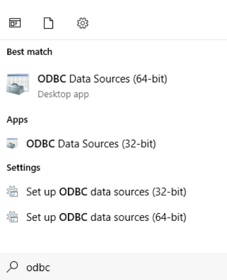
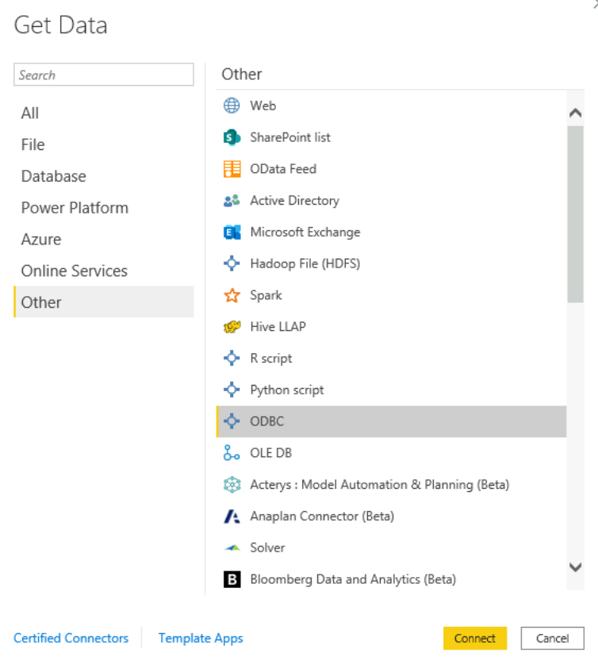
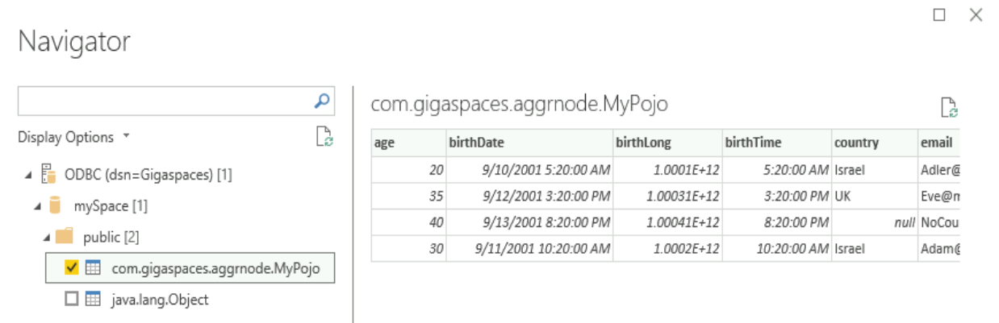

The GigaSpaces data grid can be connected to Tableau via an ODBC
In order to create an ODBC connect to Tableau, proceed as follows.
Install ODBC Driver for PostgreSQL to be used by Tableau.
Open Tableau.
In the left panel where the title is "To a Server", choose "More..." and select "Other Databases (ODBC)".
In the dialog, choose "Driver" and then choose “PostgreSQL Unicode(x64)”.
Click Connect.
In the connection dialog, enter the following information:
Driver: PostgreSQL Unicode
Server: <data-gateway-endpoint-address> for example: localhost. In Kubernetes, it will be the load balancer endpoint.
Port: <gateway-bind-port> default: 5432
Database: <space-name> for example: mySpace
Username: admin. Password: 1234. Note that username and password are not currently verified.
Click Sign In
On the left panel where the title is "Schema", enter the package name of the Java package where the table is located.
Then under "Table", choose the desired table name.
In order to create a JDBC connect to Tableau, proceed as follows.
Install JDBC Driver for PostgreSQL to be used by Tableau.
Open Tableau.
In the left panel where the title is "To a Server", choose "More..." and select "Other Databases (JDBC)".
In the dialog, enter these connection details:
URL: format is jdbc:postgresql://host:port/spacename where port is the gateway port
Dialect: PostgreSQL
Username: default is postgres
Password: default is empty
Click Sign In
Choose the desired table name.
In order to create an ODBC connect to PowerBI, proceed as follows.
Install ODBC Driver for PostgreSQL (tested on v10.03) to be used by PowerBI.
Launch the “ODBC Data Source Administrator” in your machine:

Add DSN data source -> choose PostgreSQL Unicode (x64)
In the connection dialog, enter the following information:
Driver: PostgreSQL Unicode
Server: <data-gateway-endpoint-address> for example: localhost. In Kubernetes, it will be the load balancer endpoint.
Port: <gateway-bind-port> default: 5432
Database: <space-name> for example: mySpace
Username: admin. Password: 1234. Note that username and password are not currently verified.
SSL Mode: disable
Click Sign In
Open PowerBI -> click on “Get Data” -> choose “Other” -> “ODBC” -> Connect:

Choose Data source name (DSN) which you created previously: “GigaSpaces” -> click “OK”
In the navigator, navigate to the schema of your Space and choose it -> click Load:

PowerBI will load the schema and it will be shown in the “Fields” section of your screen.